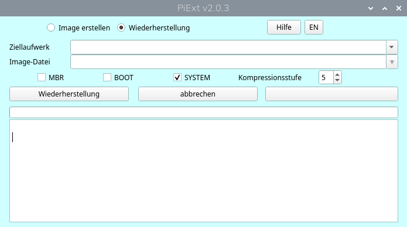

PiExt is a backup and restore tool for Raspberry Pi systems. It can create and restore complete drive backups including the MBR, boot partition and EXT2, EXT3 or EXT4 system partitions.
PiExt can be used through its graphical user interface (GUI) or from the command line (CLI).
For the system partition, PiExt stores only the sectors currently used by the filesystem. The image is compressed using Zstandard (ZSTD), which significantly reduces the required backup space.
PiExt is available from GitHub and SourceForge.
Download the Debian package and install it on your Raspberry Pi. PiExt is intended for Linux systems running on Raspberry Pi hardware.
sudo piextThe graphical interface allows you to select the source drive for a backup and the target drive for a restore.
PiExt works with complete drives rather than requiring the user to manually select individual partitions for a complete backup.

A typical Raspberry Pi system drive contains a boot partition and a Linux system partition. PiExt can back up the complete drive structure, including the MBR, boot partition and system partition.
Depending on the device, partition names can differ. For example,
normal drives use names such as /dev/sda1 and
/dev/sda2, while devices such as SD cards and NVMe drives
may use names such as /dev/mmcblk0p1 or
/dev/nvme0n1p1.
Select the complete source drive in PiExt and specify the directory where the images should be stored.
A complete Raspberry Pi backup consists of separate image components:
The system image contains only the sectors currently used by the filesystem. This makes the image considerably smaller than a raw image of the complete partition.
The first system backup stored in an image directory becomes the Base Image.
The Base Image contains the complete used filesystem data required to restore the system partition.
Subsequent backups can be stored as Differential Images. A Differential Image is created directly from the Base Image and contains the differences from that Base Image.
Differential Images are not chained together. Each Differential Image therefore remains directly associated with the Base Image.
PiExt uses different image formats for the different parts of a drive:
System and boot images use Zstandard (ZSTD) compression.
PiExt allows the MBR, boot partition and system partition to be selected independently during a restore.
This makes it possible to restore only the required part of a backup or to restore a complete Raspberry Pi system.
PiExt can also restore an image to a completely empty drive. The drive does not have to contain existing partitions before the restore.
When restoring the MBR, PiExt recreates the partition structure required by the image. The boot and system data can then be restored to the corresponding partitions.
PiExt can also be used without the graphical interface. This is useful for scripts, automated backups and systems where a GUI is not required.
For example:
sudo piext /dev/sda /backup/piextAn SD card can be specified in the same way:
sudo piext /dev/mmcblk0 /backup/piextThe command line interface supports backup and restore operations as well as options for unattended operation.
PiExt takes special care when the currently running system is involved. The active root partition is not offered as a normal restore target.
This prevents accidental attempts to overwrite the filesystem from which the running operating system is currently operating.
PiExt is designed for Raspberry Pi systems running Linux. It supports common Raspberry Pi storage devices including SD cards, USB drives and NVMe drives.
EXT2, EXT3 and EXT4 system partitions are supported for filesystem-aware system backups.
sudo.sudo.PiExt is an open-source project developed by RaspberryFpc.